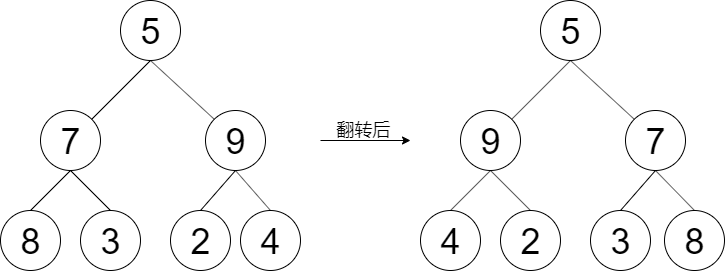

剑指 Offer 27. 翻转二叉树
递归：每个结点把左右孩子交换一下，再对换过来的两棵新子树继续做同样的事；空结点是出口，最后返回根。
思路
- 镜像 = 每个结点左右孩子互换，递归天然适配：进到结点先交换
left/right。 - 再对换过来的新左、新右子树递归翻转（翻的是交换之后的子树）。
null直接返回，是递归出口；整棵树翻完返回root。
图解
最优解
1class Solution {2 public TreeNode flipTree(TreeNode root) {3 if (root == null) return null;4 // 交换当前结点的左右孩子5 TreeNode tmp = root.left;6 root.left = root.right;7 root.right = tmp;8 // 对换过来的新左右子树继续翻9 flipTree(root.left);10 flipTree(root.right);11 return root;12 }13}题目
给定一棵二叉树的根节点 root，请左右翻转这棵二叉树，并返回其根节点。
示例 1：

输入：root = [5,7,9,8,3,2,4] 输出：[5,9,7,4,2,3,8]
提示：
- 树中节点数目范围在
[0, 100]内 -100 <= Node.val <= 100
注意：本题与主站 226 题相同：https://leetcode.cn/problems/invert-binary-tree/
题面取自力扣当前版本。
数据快照 2026-11-04。题面版权归力扣所有，本站点仅供本人学习使用，请勿对外发布。